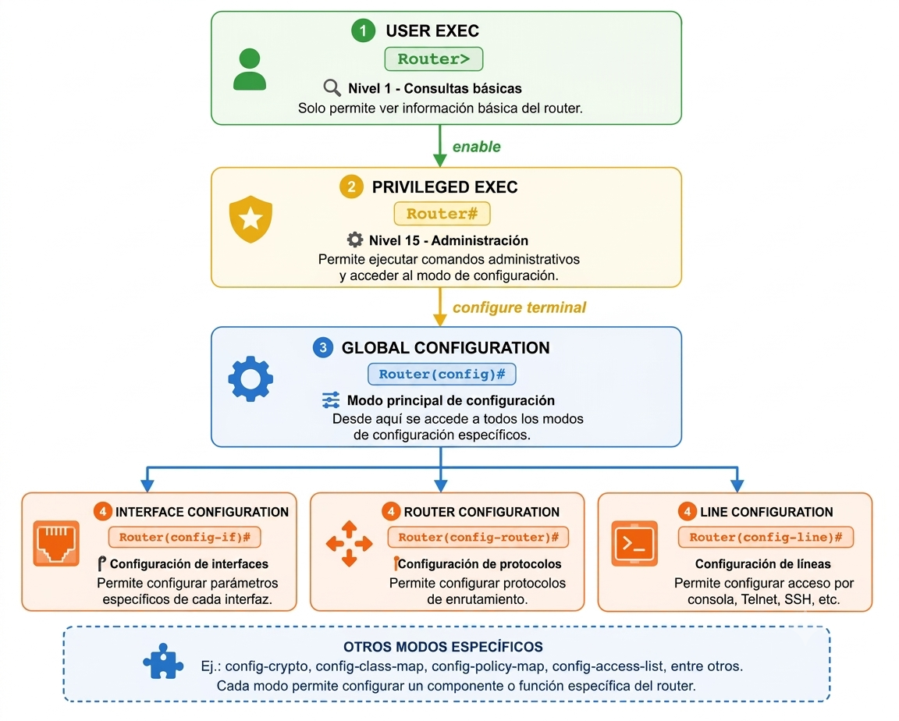
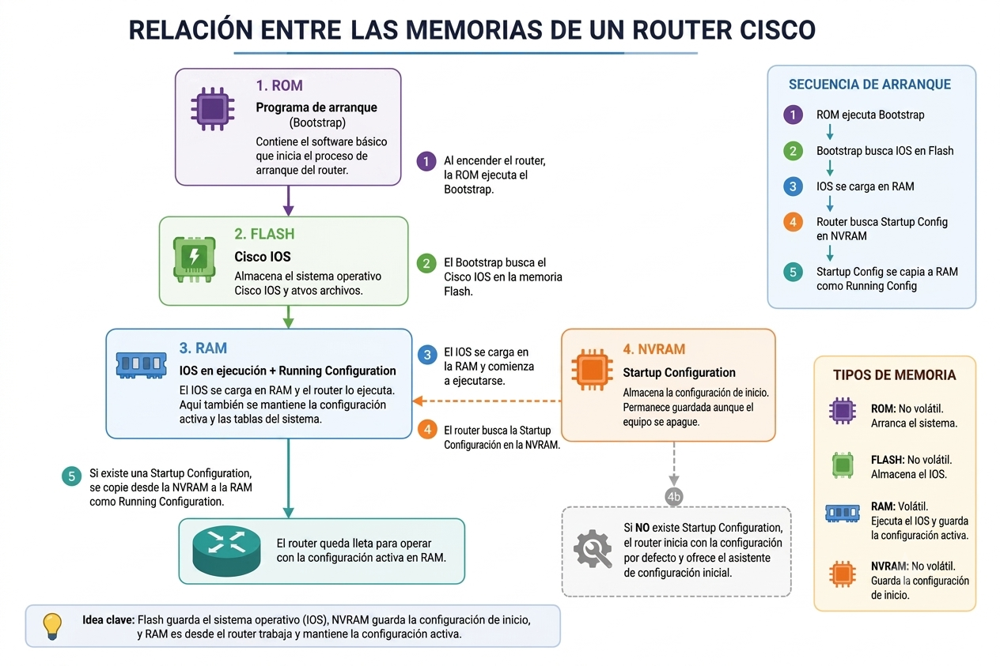

Clase 1 - Repaso Redes I y Arquitectura básica de Router Cisco
Las condiciones de promoción de la materia se encuentran detalladas en el siguiente documento:
Ver condiciones de promociónPara el desarrollo de las prácticas de laboratorio será necesario contar con las siguientes herramientas:
| Aplicación | Descripción | Descarga |
|---|---|---|
| Wireshark | Analizador de protocolos que permite capturar y analizar el tráfico que circula por una red. | Descargar |
| MobaXterm | Herramienta utilizada para realizar conexiones remotas mediante SSH, Telnet y otros protocolos de administración. | Descargar |
| Packet Tracer | Simulador de redes utilizado para realizar prácticas con dispositivos Cisco. | Información descarga |
El primer trabajo práctico tiene como objetivo aplicar conceptos vistos en Redes I y comenzar con el reconocimiento de dispositivos de red, tablas MAC y herramientas de diagnóstico.
Ver consigna TP N°1El alumno deberá entregar los siguientes elementos:
Antes de comenzar con los nuevos contenidos se realizará un repaso de conceptos fundamentales de redes.
Reconocer los principales componentes de un router Cisco y comprender cómo interactúan durante el proceso de arranque y configuración del equipo.
Un router es un dispositivo de red cuya función principal es interconectar redes diferentes, tomando decisiones sobre el mejor camino para enviar los paquetes de datos.
Además del hardware, posee un sistema operativo especializado denominado Cisco IOS (Internetwork Operating System), que permite administrar y configurar el dispositivo.
| Componente | Función |
|---|---|
| CPU | Ejecuta el sistema operativo y procesa los paquetes. |
| Memoria RAM | Almacena temporalmente el IOS en ejecución, la tabla de enrutamiento y la configuración activa (Running Configuration). Su contenido se pierde al apagar el equipo. |
| Memoria NVRAM | Almacena la configuración de inicio (Startup Configuration). Conserva la información aunque el equipo se apague. |
| Memoria Flash | Almacena el sistema operativo Cisco IOS y otros archivos. Es una memoria no volátil. |
| ROM | Contiene el programa de arranque (Bootstrap) y funciones básicas de recuperación del sistema. |
Cuando el router se enciende, ocurre la siguiente secuencia:
Si no existe una Startup Configuration, el router inicia con la configuración por defecto y ofrece el asistente de configuración inicial.
El Cisco IOS (Internetwork Operating System) es el sistema operativo del router.
Entre sus funciones se encuentran:
Cisco organiza la configuración del equipo mediante distintos niveles de privilegio. Cada modo permite ejecutar únicamente los comandos correspondientes a ese nivel de administración.

Es el primer nivel de acceso al router.
Permite ejecutar únicamente comandos básicos de consulta, como verificar conectividad o visualizar información limitada del sistema.
Ejemplo:
Router>
Se accede mediante:
enable
Permite:
Ejemplo:
Router#
Se accede mediante:
configure terminal
Desde este modo se modifica la configuración general del equipo.
Ejemplo:
Router(config)#
Desde el modo Global Configuration es posible acceder a distintos contextos de configuración, según el componente que se desea administrar.
| Modo | Prompt | Descripción |
|---|---|---|
| Interfaces | Router(config-if)# | Configuración de interfaces físicas y lógicas. |
| Protocolos de enrutamiento | Router(config-router)# | Configuración de protocolos como RIP, OSPF o EIGRP. |
| Líneas | Router(config-line)# | Configuración de consola, Telnet o SSH. |
Cada modo permite modificar únicamente los parámetros relacionados con ese componente, evitando cambios accidentales sobre otras partes de la configuración del equipo.
Durante el funcionamiento del router, las distintas memorias interactúan para almacenar el sistema operativo y la configuración del equipo. Comprender esta relación es fundamental para saber dónde se guardan los cambios realizados y qué sucede cuando el dispositivo se reinicia.

Antes de comenzar cualquier configuración es importante identificar en qué modo de la CLI se encuentra el administrador y comprender en qué memoria se almacenarán los cambios realizados.
| Comando | Memoria involucrada |
|---|---|
| show running-config | RAM |
| show startup-config | NVRAM |
| copy running-config startup-config | Copia la configuración desde la RAM hacia la NVRAM. |
| reload | Al reiniciar, el router carga el IOS desde la memoria Flash y copia la Startup Configuration desde la NVRAM hacia la RAM. |
En esta primera clase se repasaron los principales conceptos de Redes I y se introdujo la arquitectura básica de un router Cisco. Además, se analizaron las memorias internas del equipo, el proceso de arranque, la estructura del sistema operativo Cisco IOS y los distintos modos de acceso mediante la interfaz de línea de comandos (CLI). Estos conocimientos constituyen la base para las prácticas de laboratorio y las configuraciones que se realizarán durante las próximas clases.